主题：Guest Lecture by Jennifer Coulter (Flatiron Institute) —— An Introduction to Parallel Distributed Memory Linear Algebra Software
Lecture 17 是一节客座课，讲者来自 Flatiron Institute 的 CCQ（Center for Computational Quantum physics），平时用 Phoebe 这个 HPC 代码做热电材料的玻尔兹曼输运计算——所以一上来用 thermoelectric 材料做"为什么需要分布式内存线性代数"的动机。主线是：分布式矩阵 → block-cyclic 分布 → BLACS + ScaLAPACK 这一套传统软件 → modern landscape (ELPA / SLATE / cuSOLVERMp / ELEMENTAL)。Slide 1–3 是讲者自我介绍 / 大纲 / 致谢，按惯例跳过；slide 50 是参考链接列表，也跳过；slide 51 / 53 / 54 只是 "EXAMPLE 1/2/3" 占位页（讲者现场跑代码 demo），笔记里只在 slide 52 ParallelMatrix wrapper 处提一下。
世界上能源消耗中有很大一部分以"废热"的形式损失掉——比如汽车发动机、工业炉、计算机芯片。Slide 4 提出：能不能把这些热回收成电？这就是 thermoelectric（热电） 现象。
当一根材料的两端温度不同（一端 hot、一端 cold），材料内部会产生电压差。这就是 Seebeck 效应。Slide 4 上的 "S" 系数（V/K）就是 Seebeck 系数：每开尔文温差能产生多少电压。这是热电器件的"基础物理"。
放射性同位素温差发电机（RTG）——NASA 的旅行者号、毅力号火星车都靠它供电；工业余热回收；可穿戴设备体温供电。共同点：要么没有别的选择（深空），要么发电效率不高但能就地用。
Slide 6 给出 thermoelectric 材料的 figure of merit：
其中 S 是 Seebeck 系数，σ 是电导率，κ 是热导率，T 是温度。理想材料要电导高（电子好流动）但热导低（热不容易扩散掉）——但这两件事在金属里是耦合的（电子既导电也导热），所以要找特殊材料才能解耦。这正是搜索的核心难点。
Bi₂Te₃、PbTe、SnSe、Skutterudites、Half-Heuslers 等是历来研究热点。Slide 7 上的图是不同材料体系的 ZT 随温度的曲线——可以看到 ZT 通常 ≤ 2，工业上要 ZT ≈ 3 才有竞争力。用 HPC 模拟筛材料是这个领域的一条主路径。
要算 σ、S、κ，传统方法是解 玻尔兹曼输运方程：描述电子（或声子）在外加电场 / 温度梯度下分布函数 f(k, r, t) 怎么演化的偏微分方程。在材料里要离散到布里渊区的 k-mesh 上——典型 100×100×100 的 mesh，再乘上能带数，就得到一个稠密矩阵特征值 / 线性系统问题。
讲者所在组写的开源代码，C++ + MPI/OpenMP/CUDA，专门做电子-声子耦合下的输运计算。它的核心 kernel 之一就是对一个分布式稠密矩阵做对角化——也就是为什么这一节课要讲 ScaLAPACK。
DFT（密度泛函）算电子结构 → Wannier 化 + 电子-声子耦合矩阵 → BTE 求解 → 输运系数 → ZT。每一步矩阵规模指数级放大，所以最后 BTE 求解必须分布式。
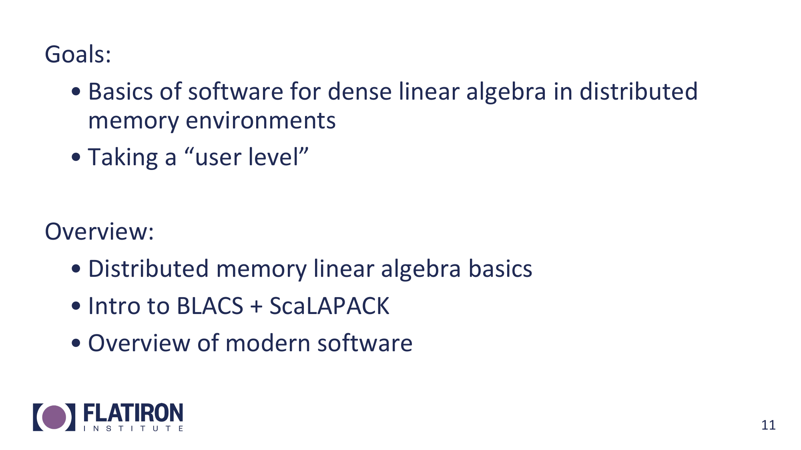
讲者明确目标：(1) 知道有哪些分布式线性代数库可用；(2) 看懂 ScaLAPACK 的 setup 步骤、能去文档里找需要的函数；(3) 对现代替代品（ELPA / SLATE / cuSOLVERMp）有个 mental map，遇到 GPU 集群时知道往哪个方向找。不要求记住每个 API 的全部参数——记住"长什么样、怎么查"就够了。
分布式内存里进程之间不共享地址空间，要靠消息传递来交换数据。MPI 提供 send/recv 和 collective（broadcast、reduce、scatter、gather、allgather…）。后面 BLACS 完全建在 MPI 之上，所以 MPI 是底座。
线性代数底层 kernel，分三层：
Level 3 是 HPC 最重要的，因为每个数据元素被复用 n 次，计算/访存比高，能吃满 cache 和向量单元。各厂商的高性能 BLAS 实现：Intel MKL、AMD AOCL、OpenBLAS（开源）、cuBLAS（NVIDIA GPU）、rocBLAS（AMD GPU）。
建在 BLAS 之上，提供高层求解器：线性方程组（dgesv）、最小二乘（dgels）、特征值（dsyev 对称、dgeev 一般）、SVD（dgesdd）等。LAPACK 的设计哲学是"内部尽量多调 Level 3 BLAS"——所以当 BLAS 高效时，LAPACK 自动跟着快。
关键命名约定（影响后面 ScaLAPACK 阅读）：第一字母 = 数据类型（s 单精度、d 双精度、c 复单、z 复双），后两字 = 矩阵类型（sy = symmetric，ge = general，po = positive definite），最后是操作。所以 dsyev = double-precision symmetric eigenvalue。
把一个 n×n 矩阵分给 P 个进程，最朴素的四种切法：
高斯消元是按列从左往右消的：第 k 步要用第 k 列做 pivot 去更新右下角的子矩阵。
纯 cyclic 把矩阵切碎成单行或单元素，每个进程持有的元素在原矩阵里完全不连续。这意味着：
反过来 1D/2D Block 数据 locality 好——每个进程连续持有一大块，能跑高效的本地 gemm/dsyrk，cache 友好。
所以两种朴素方式各自只解决一个问题：Block 解决 locality 但 imbalance；Cyclic 解决 balance 但 locality 差。下一张 slide 把两者揉到一起。
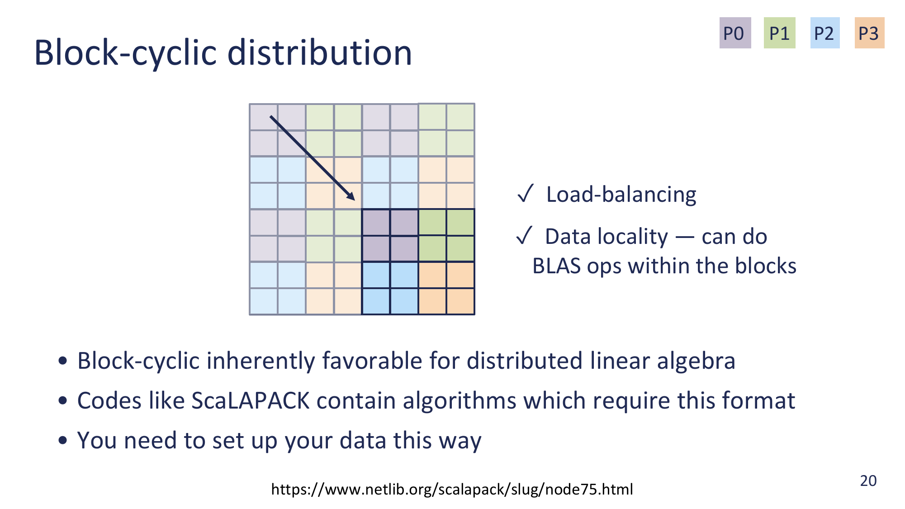
两个参数：
把矩阵按 m_b × n_b 切成网格状的小 block，然后这些 block 沿行方向 cyclic 发给 P_row 个 row，沿列方向 cyclic 发给 P_col 个 col——也就是 2D block-cyclic。
这就是 ScaLAPACK / ELPA / SLATE / cuSOLVERMp 通通采用 block-cyclic 的原因——它在两个极端之间找到了 sweet spot。
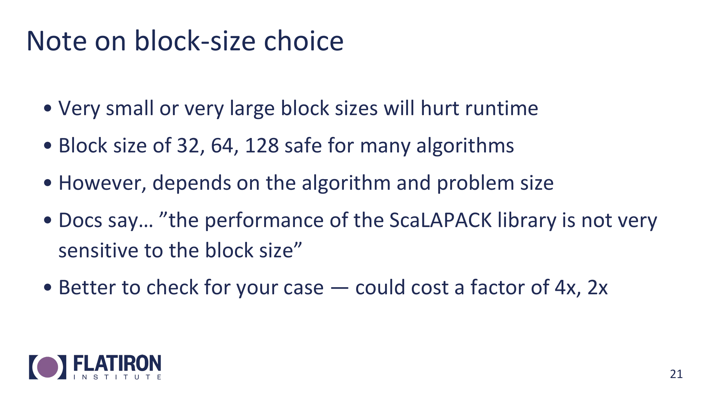
常用 block size：32 / 64 / 128。这些值对绝大多数现代 CPU 的 cache line 和 TLB 都是友好的，是社区跑出来的安全默认。
结论：除非有 profile 数据支持，否则别瞎调——默认 64 一般就对了。
BLAS / LAPACK / BLACS / ScaLAPACK 都来自同一个谱系——Jack Dongarra 在 University of Tennessee Knoxville (UTK) 的小组（后来叫 Innovative Computing Lab）。它们的"参考实现"全放在 netlib.org。Dongarra 同一组之前还做过 EISPACK / LINPACK，再之前是 BLAS 1。
Slide 24 提醒：商用机器上常用 IBM 的 Parallel ESSL（PESSL），它是 ScaLAPACK 的私有变体，API 名字基本一样（PDSYEV、PDGESV 这种）但在 IBM Power 系列上做了深度优化。文档（PESSL 的）有时反而比 netlib ScaLAPACK 的更易读，所以查参数含义时可以两边对照看。
BLACS 是 MPI 和 ScaLAPACK 中间的薄薄一层，专门提供"线性代数式的"通信原语：发一行、发一列、发一个子矩阵、行内 broadcast、列内 reduce 等等。它内部完全是用 MPI 实现的，但暴露给 ScaLAPACK 的接口是"按二维网格组织的进程之间收发矩阵 block"这种领域语言，比直接写 MPI_Send 一行行编号方便得多。
既然要做 2D block-cyclic，就要把 P 个进程组织成逻辑上的二维网格 P_row × P_col。Slide 25 的 2×3 例子和 slide 26 的 2×2 例子展示了同一件事：你有 6 个或 4 个 MPI rank，BLACS 把它们排成 grid，每个 rank 分配到 (myrow, mycol) 坐标，后续所有矩阵分发都按这套坐标走。BLACS 不要求方阵网格，但 ScaLAPACK 的 dense eigensolver 在方阵 grid（√P × √P）上性能最好——所以一般如果有 16 进程就用 4×4。
BLACS 把"哪些 rank、什么形状、列优先还是行优先"打包成一个 context，用一个 int 标识。后续所有调用都要把这个 context 传进去——可以理解成 MPI_Comm 的"线性代数版"，但语义更窄、只描述网格结构。同一个程序里可以同时存在多个 context（比如一个全局 grid + 几个子 grid），按场景切换。
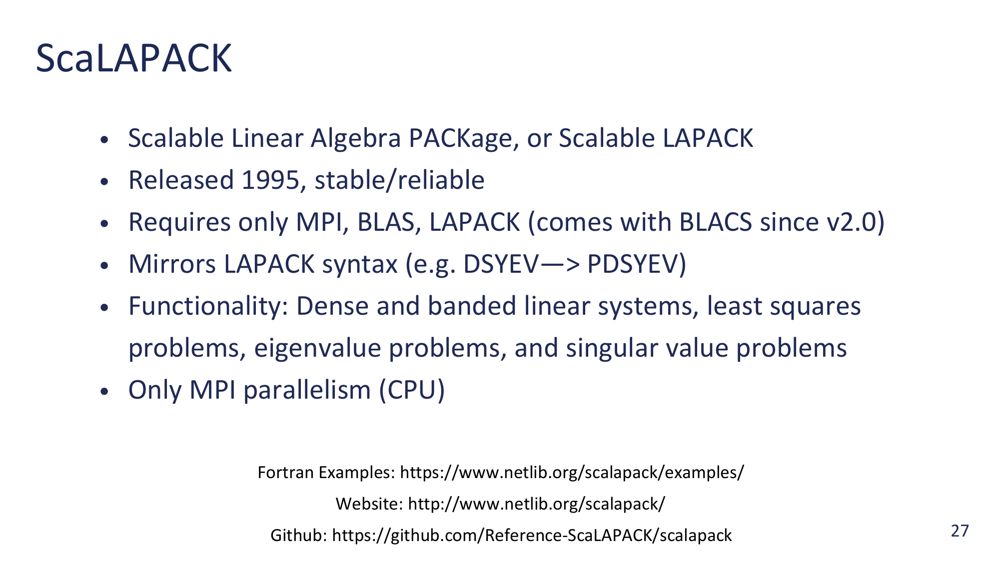
ScaLAPACK（1995）= LAPACK 的分布式内存版本。API 命名规则一一对应：LAPACK 里的 DSYEV（double symmetric eigenvalue）在 ScaLAPACK 里就叫 PDSYEV ——前面加 P 表示 parallel。绝大多数 LAPACK 求解器都有对应的 ScaLAPACK 版本。
ScaLAPACK 依赖 MPI + BLAS + LAPACK + BLACS。从 ScaLAPACK 2.0 开始，BLACS 已经被 bundle 在 ScaLAPACK 的源码里，不用单独装。
CPU only。ScaLAPACK 自己不会跑到 GPU 上——这是它在 exascale 时代的最大弱点，也是 SLATE / cuSOLVERMp 等替代品诞生的原因（后面 modern landscape 会讲）。
ScaLAPACK 的某个调用（比如 PDSYEV）要操作一个分布在多个进程上的矩阵 A。这个调用本身是collective 的——所有 rank 同时进入，每个 rank 只持有 A 的一部分（一些 block）。函数怎么知道：A 全局多大？block 多大？grid 多大？我这块在全局的哪个位置？
每个分布式矩阵都配一个长度为 9 的整数数组 desc[0..8]。所有元数据塞在里面：
| 下标 | 含义 |
|---|---|
| desc[0] DTYPE | matrix descriptor type，dense matrix 是 1 |
| desc[1] CTXT | BLACS context 句柄（就是 slide 26 那个 int） |
| desc[2] M | 全局矩阵的行数 |
| desc[3] N | 全局矩阵的列数 |
| desc[4] MB | block 行尺寸 m_b |
| desc[5] NB | block 列尺寸 n_b |
| desc[6] RSRC | 第一个 block-row 的"主"进程行号（一般 0） |
| desc[7] CSRC | 第一个 block-col 的"主"进程列号（一般 0） |
| desc[8] LLD | 本地存储的 leading dimension（local row stride，至少 = 本地行数） |
把所有"矩阵的逻辑视图"信息打包成一个简单数组，调用 ScaLAPACK 函数时只传本地数据指针 + descriptor就够了。函数内部根据 descriptor 自己算"我应该和哪些进程通信、什么时候、传多少 byte"。
实际写代码时基本不直接构造这 9 个数——用 BLACS 提供的辅助函数 descinit(...) 一次性填好（slide 42 的 code 会用到）。
左图（slide 30）是全局视角：7×7 的矩阵被切成 2×2 的小 block，注意 7 不能整除 2，所以最后一行 / 最后一列的 block 是"残块"（1×2 或 2×1 或 1×1）。每个 block 用颜色标记被哪个进程持有——4 种颜色对应 P00、P01、P10、P11 这 2×2 grid。颜色按 cyclic 派发：第 (i, j) 个 block 归 (i mod 2, j mod 2)。
右图（slide 31）是本地视角：每个进程把自己拿到的 block 在本地 stack 起来，存成一个连续的小矩阵。注意：
indxl2g / indxg2l 这类辅助函数互相转换。每个进程的视角都不同——它只看到自己那一块拼出来的子矩阵。ScaLAPACK 函数收到的"local pointer"指的就是这个本地拼接矩阵；descriptor 告诉它这块在全局里对应什么位置。
7×7 矩阵 / 3×3 blocks → 行方向被切成 ⌈7/3⌉ = 3 个 block 行（高度 3,3,1），列方向同理 3 个 block 列（宽 3,3,1）。一共 3×3 = 9 个 block，按 cyclic 派发到 2×2 grid 上：第 (i, j) 个 block 归 (i mod 2, j mod 2)。
结果（slide 33 的着色）：
说明同一个矩阵，不同 block size 会让本地存储形状完全不同。block size 不只是性能调参——它决定了每个进程的本地内存占用、本地 BLAS 调用的形状。下一张 slide 35–36 顺着这个思路讨论"选错 block size 多惨"。
同一个 7×7 矩阵换不同 block size 后的对比：
block 太大→ imbalance；太小 → locality 死。中间档（32/64/128）是历史经验值。这一段用具象例子佐证 slide 21 的口号。
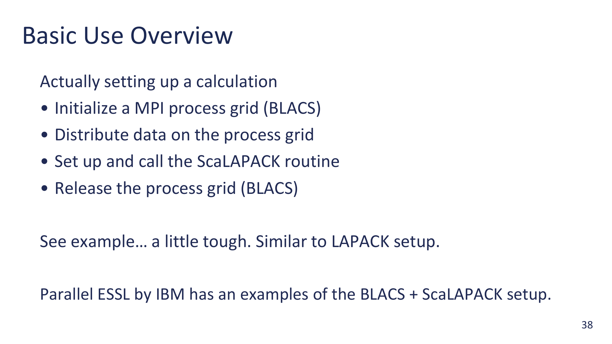
用 BLACS + ScaLAPACK 做任何事情都是这四步：
descinit 填好 descriptor，分配 workspace，调 pdsyevd（或别的）。Slide 39–42 把这 4 步对应的代码逐段展开。
dsyev vs ScaLAPACK pdsyevd：API 对比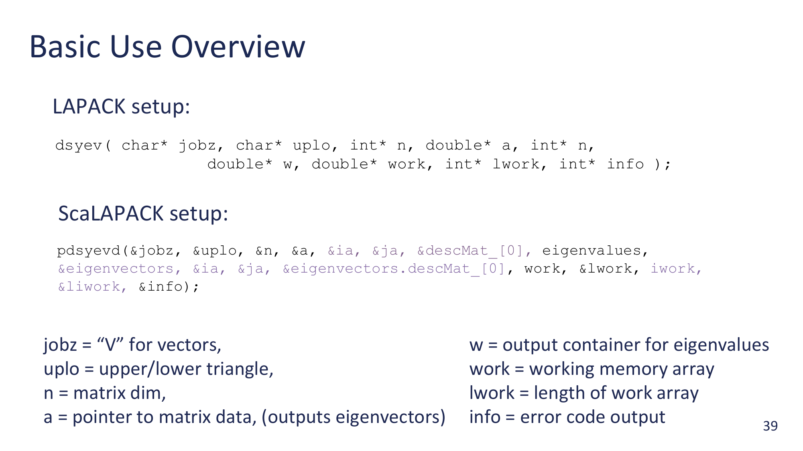
这张 slide 把单节点 LAPACK 调用和分布式 ScaLAPACK 调用并排放，方便看出多了哪些参数、为什么多。
dsyev(...) 一个节点上对称矩阵特征值dsyev(jobz, uplo, n, a, lda, w, work, lwork, info);char jobz; // 'N' = 只算特征值, 'V' = 同时算特征向量char uplo; // 'U' 或 'L'：你只在矩阵的上三角 / 下三角填了数据int n; // 矩阵阶
double* a; // n × n 矩阵的数据指针 (column-major)
int lda; // leading dimension，本地存储的 row stride，>= nlda 通常等于 n，但如果你把 a 嵌在更大的数组里，lda 就是那个外层数组的 row stride。Fortran 风格，column-major。double* w; // 输出：长度 n 的数组，特征值升序写在这double* work; // workspace
int lwork; // workspace 长度dsyev(..., work, lwork=-1, info)，函数把推荐的 lwork 写进 work[0]，然后真正分配再调一次。int* info; // 返回码：0 = 成功，<0 = 第 |info| 个参数有问题，>0 = 不收敛pdsyevd(...) 分布式版本pdsyevd(jobz, uplo,
n,
a, ia, ja, desca,
w,
z, iz, jz, descz,
work, lwork,
iwork, liwork,
info);char jobz; // 同 LAPACK
char uplo; // 同 LAPACK
int n; // 同 LAPACK：全局矩阵阶double* a; // 本地数据指针：当前进程持有的 block 拼起来的小矩阵
int ia, ja; // 在全局矩阵里，本地数据对应的子矩阵的左上角坐标
int* desca; // 长度 9 的 descriptor 数组（slide 28-29）double* w; // 输出：长度 n 的特征值数组（每个进程都拿到完整副本）double* z; // 输出：特征向量矩阵，分布式存储
int iz, jz; // z 在 "全局特征向量矩阵" 里的左上角偏移
int* descz; // z 的 descriptordouble* work; int lwork;
int* iwork; int liwork;int* info;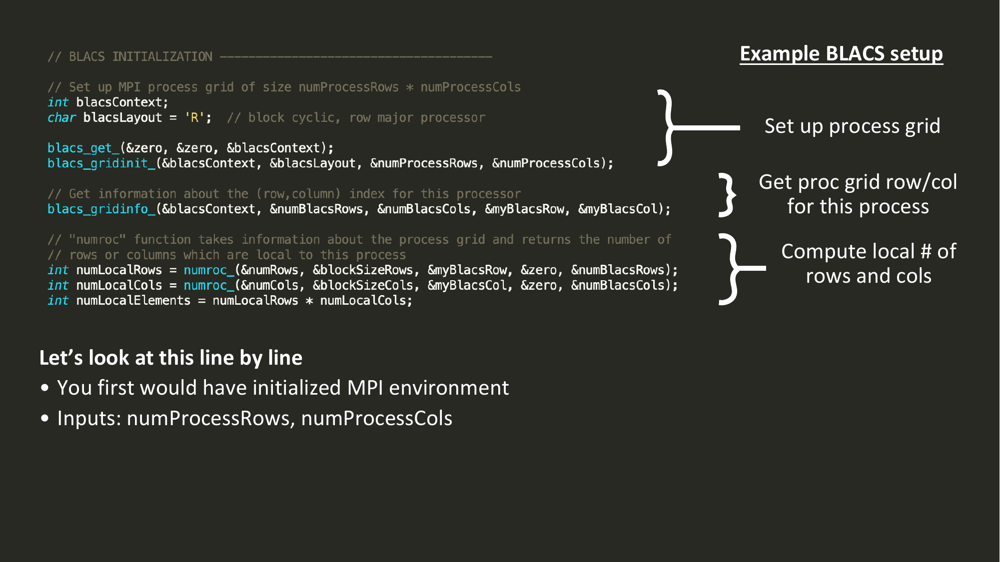
这一段对应 slide 38 的 step 1。slide 上的代码是讲者写在一个完整 main 里的片段，下面把每一段拆开讲。
int icontxt;
int what = 0; // 0 表示 "default system context"
int idef = 0;
blacs_get(&idef, &what, &icontxt);blacs_get 拿一个"默认 context"——可以理解为 BLACS 启动时基于 MPI_COMM_WORLD 包出来的种子 context。我们后面要用它造一个真正带 grid 形状的 context。idef = 0 是约定的"我什么都不指定"，what = 0 是"给我默认的"。返回写到 icontxt。int nprow = 2, npcol = 2;
char order = 'R'; // 'R' = row-major：rank 0 → (0,0), rank 1 → (0,1), ...
blacs_gridinit(&icontxt, &order, &nprow, &npcol);blacs_gridinit 在前面拿到的 icontxt 上"刻"出一个 nprow × npcol 的二维网格，并把 rank 按 row-major 的顺序映射到 (myrow, mycol) 坐标。调用之后 icontxt 就变成了"带网格几何的 context"，后面所有矩阵 descriptor 都要引用这个 icontxt。如果 nprow × npcol > 总进程数会失败。int myrow, mycol;
blacs_gridinfo(&icontxt, &nprow, &npcol, &myrow, &mycol);int globalRows = ...; // n
int globalCols = ...; // n
int blockRows = 64;
int blockCols = 64;
int rsrc = 0, csrc = 0;
int numLocalRows = numroc(&globalRows, &blockRows, &myrow, &rsrc, &nprow);
int numLocalCols = numroc(&globalCols, &blockCols, &mycol, &csrc, &npcol);numroc（Number of Rows Or Columns）是 BLACS 提供的辅助函数："按 block-cyclic 派发，全局 N 个 row、block 大小 NB、grid 这边 nprow 个进程，我（myrow）应该拿到几行？" 因为 N 不一定能整除 NB·nprow，每个进程拿到的本地行数会不一样——numroc 帮你算出来。 列方向同理。计算完 numLocalRows 和 numLocalCols 之后，本地存储应该 malloc 多大就清楚了。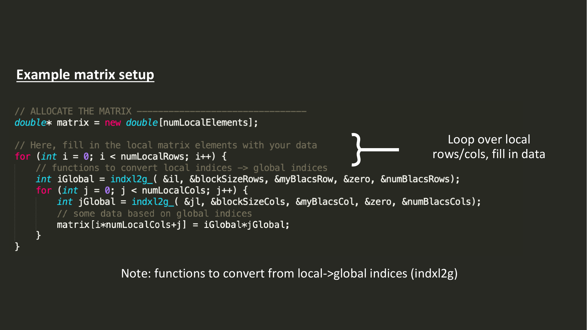
int numLocalElements = numLocalRows * numLocalCols;
double* matrix = new double[numLocalElements];for (int j = 0; j < numLocalCols; j++) {
for (int i = 0; i < numLocalRows; i++) { int globalRow = indxl2g(&i, &blockRows, &myrow, &rsrc, &nprow);
int globalCol = indxl2g(&j, &blockCols, &mycol, &csrc, &npcol);indxl2g（INDeX Local TO Global）：把本地下标 (i, j) 翻译回它在全局矩阵里的下标。这是必须的——因为你要按某个数学公式（比如 H[i,j] = …）填这个矩阵元素，公式用的是全局坐标。block-cyclic 的本地→全局映射不是简单加偏移，而是要根据 myrow / blockRows / nprow 三个量混合算，所以必须用 BLACS 提供的 helper。 matrix[i + j * numLocalRows] = compute(globalRow, globalCol);
}
}compute(i, j) 算出该位置应该填什么（比如 Hamiltonian 矩阵元）。结果按 column-major 写入本地 buffer：matrix[i + j * numLocalRows] 就是 column-major 公式。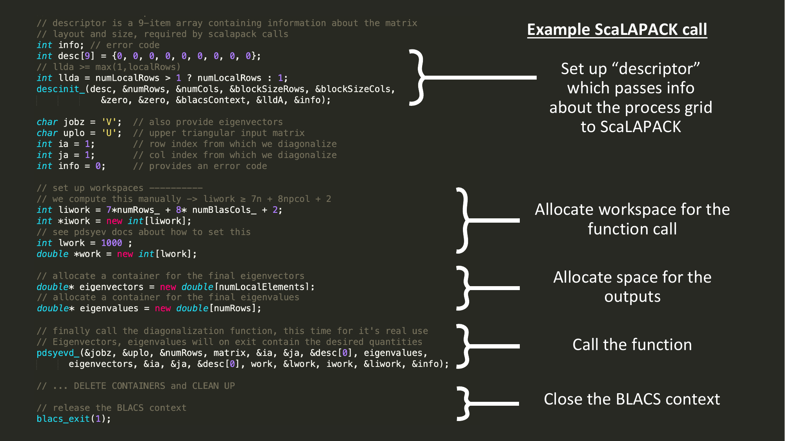
int desc[9];
int info;
descinit(desc, &globalRows, &globalCols,
&blockRows, &blockCols,
&rsrc, &csrc, &icontxt,
&numLocalRows, &info);info 检查参数合法性。int lwork = 7 * numRows + 5 * numCols + 2;
double* work = new double[lwork];pdsyevd 的文档（每个 ScaLAPACK 函数的 man page 给一条公式）。正式做法是先调 pdsyevd 一次 lwork=-1 做 query，但很多代码直接套这条经验公式。注意 numRows / numCols 是全局尺寸。double* eigenvectors = new double[numLocalElements];
double* eigenvalues = new double[numRows];char jobz = 'V'; // 要特征向量
char uplo = 'U'; // 我用了上三角
int one = 1;
pdsyevd(&jobz, &uplo,
&numRows,
matrix, &one, &one, desc,
eigenvalues,
eigenvectors, &one, &one, desc,
work, &lwork,
&info);(ia, ja) = (1, 1) 意思是"对整个全局矩阵 A 求"。注意 eigenvectors 复用了 matrix 的 desc——因为 z 和 a 在这个例子里布局一致。返回后：每个 rank 的 eigenvalues[] 都是完整 n 个值；eigenvectors 是分布式的（要看完整特征向量需要 gather）。delete[] matrix;
delete[] eigenvectors;
delete[] eigenvalues;
delete[] work;
blacs_gridexit(&icontxt);
blacs_exit(&info);
// MPI_Finalize() 由外层负责blacs_exit 的 info 参数 = 0 表示也帮你 MPI_Finalize；非 0 表示让外层自己 finalize（PHoebe 这种大代码通常 = 1）。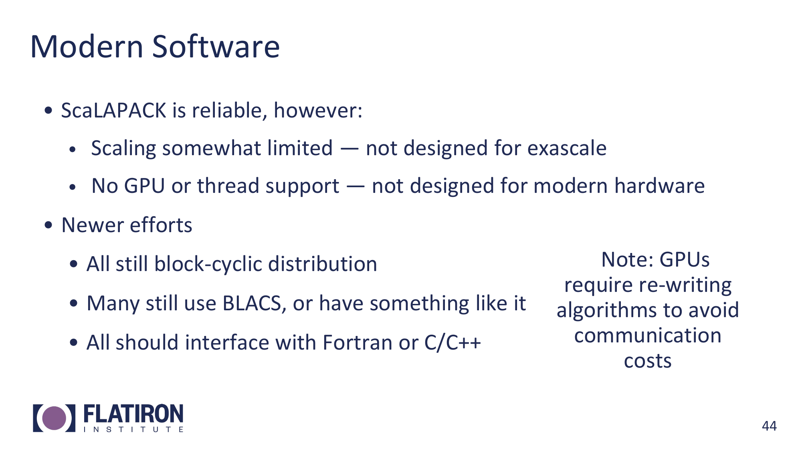
不管是 ELPA、SLATE 还是 cuSOLVERMp，几个共性：
边上小注："GPU 要求重写算法以避开通信开销"——CPU 时代被通信主导的算法在 GPU 上更糟，因为 GPU 内部带宽极高、节点间相对慢，所以要从根上换思路（比如 communication-avoiding QR）。
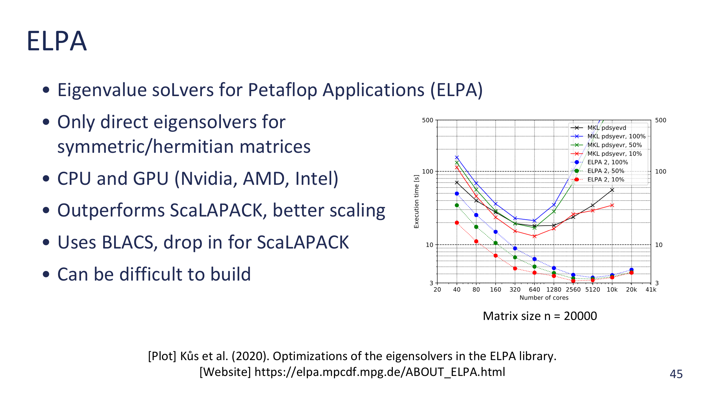
ELPA = Eigenvalue soLvers for Petaflop Applications。专攻一件事：对称 / Hermitian 矩阵的特征值——也就是 ScaLAPACK 里 PDSYEV 那一类问题。
典型场景：DFT 程序（VASP、Quantum ESPRESSO）的核心特征值步骤，几乎都接 ELPA 作为可选后端。
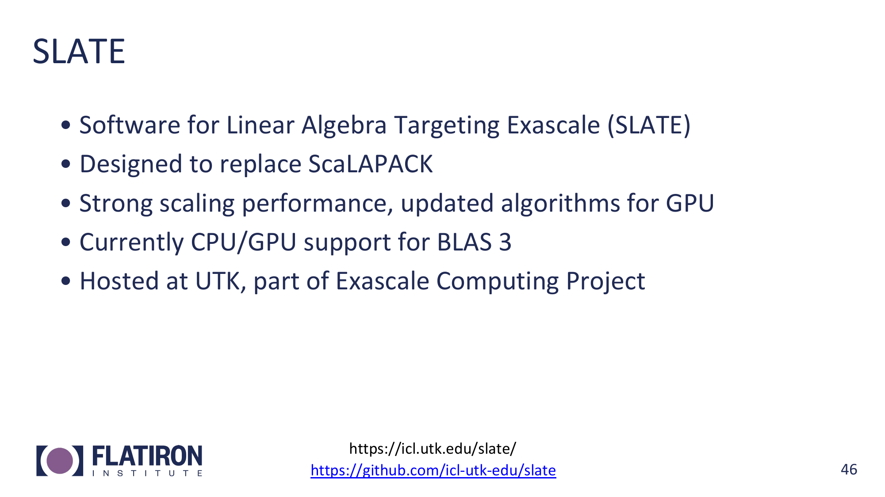
SLATE = Software for Linear Algebra Targeting Exascale。Dongarra 同一组（UTK 的 ICL）做的"ScaLAPACK 接班人"，是美国 Exascale Computing Project 的一部分。
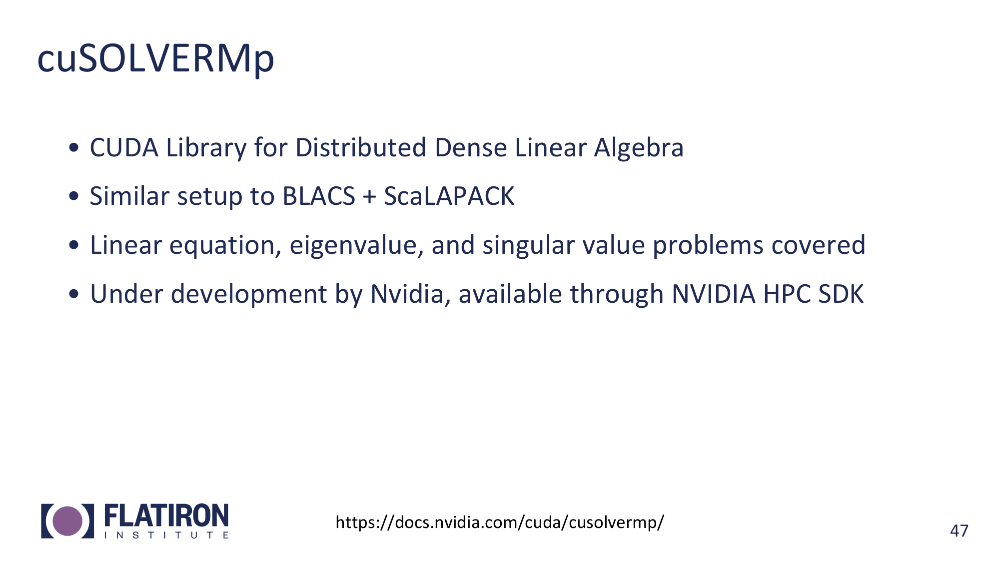
cuSOLVERMp = CUDA 的 Multi-Process distributed dense linear algebra library。
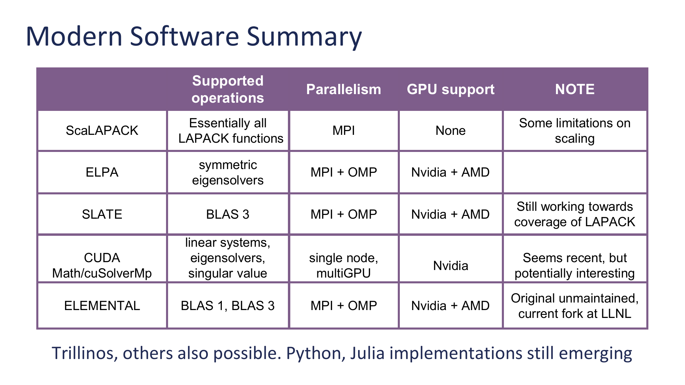
把上面几个库做横向对比：
| 库 | 覆盖 | 并行 | GPU | 注意 |
|---|---|---|---|---|
| ScaLAPACK | 几乎全部 LAPACK 功能 | MPI | 无 | scaling 受限 |
| ELPA | 对称特征值（专精） | MPI + OpenMP | NVIDIA + AMD | build 难 |
| SLATE | BLAS 3 + 部分 LAPACK | MPI + OpenMP | NVIDIA + AMD | 仍在补 LAPACK 覆盖度 |
| cuSOLVERMp | 线性系统、特征值、SVD | 单节点 / 多 GPU | NVIDIA only | 较新但有潜力 |
| ELEMENTAL | BLAS 1 + 3 | — | — | 原作者已停维护，社区 fork 在 LLNL |
底部一句："Trillinos、其他也存在；Python 和 Julia 的实现还在涌现"——意思是这个生态在快速演化，这张表不是"全部选项"，只是主流的几个。
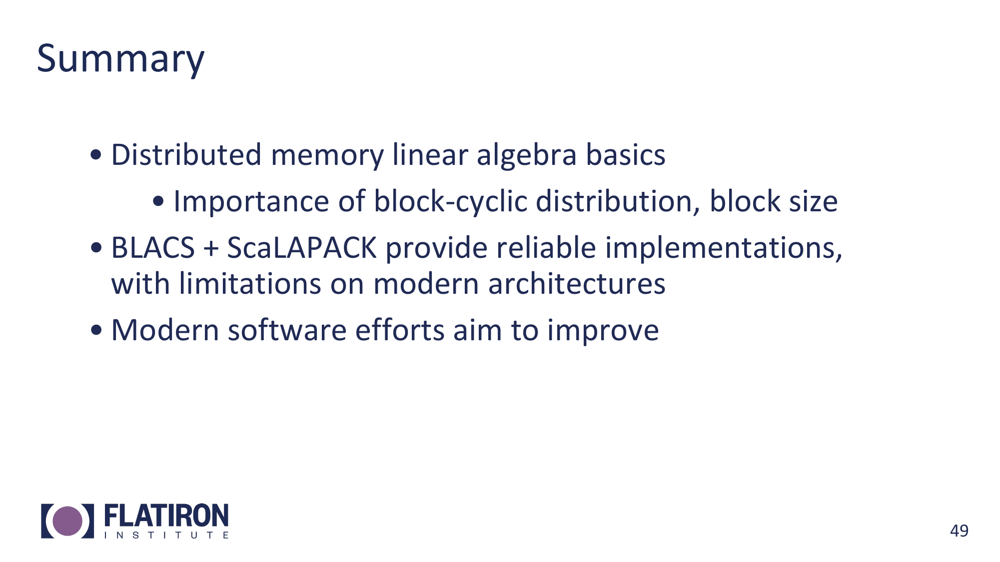
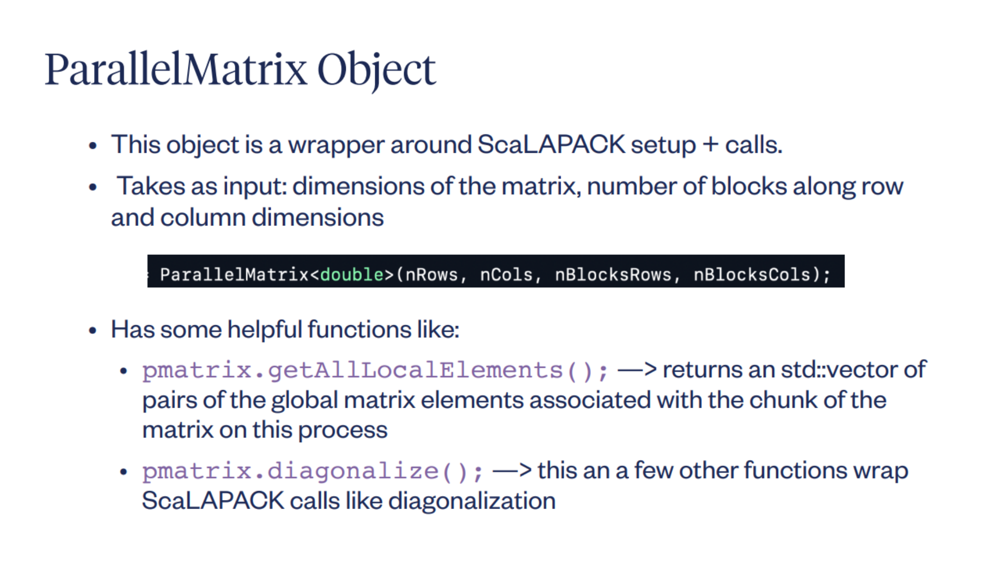
讲者顺带秀了一下 Phoebe 内部用的 C++ 包装类 ParallelMatrix<double>——把 BLACS setup + descriptor + ScaLAPACK 调用全藏在对象里。
ParallelMatrix<double> pmatrix(nRows, nCols, nBlocksRows, nBlocksCols);auto local = pmatrix.getAllLocalElements();
// returns std::vector of (globalRow, globalCol, value) tuplespmatrix.diagonalize();
// 内部封装了 pdsyevd 调用，连 workspace 都自己 query 好